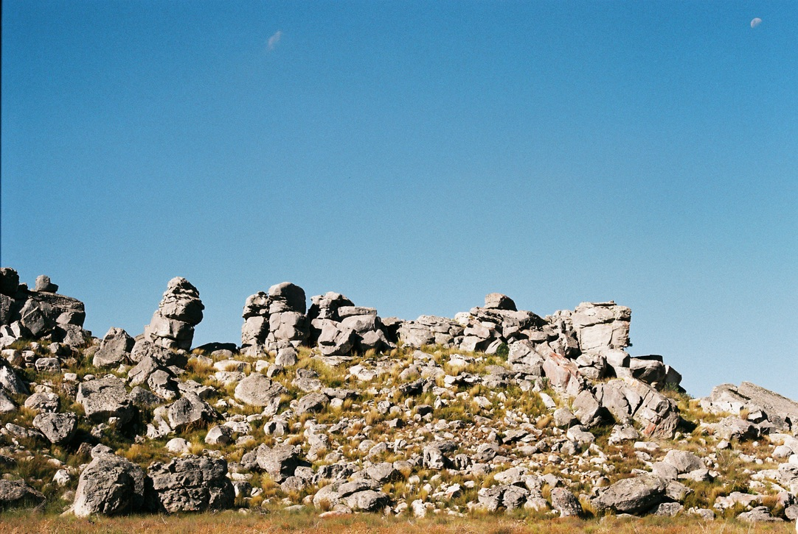
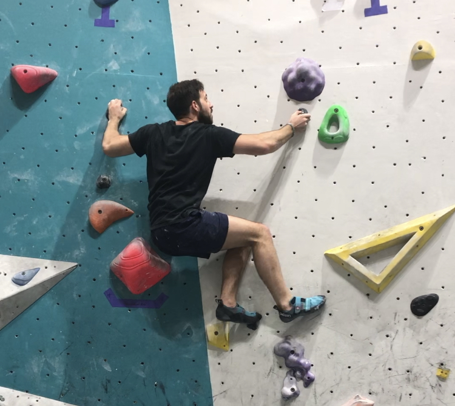

I'm an engineer who wants to learn new things and make a difference. I've studied Biomedical Engineering at the University of the Witwatersrand and Electrical and Computer Engineering at UCT. I hope to continue expanding my knowledge base and apply it to developing human-technology interfaces that can improve people's lives.
I have worked with several programing languages through my studies and have particularly enjoyed learning about digital signal processing, control engineering and embedded systems.
Languages
Intermediate: Assembly
Comfortable with: C++, Java, Matlab, Python
Skills
I have a strong background in software development, digital signal processing, control engineering, embedded system design and some experience with digital electronics.
Team Player
Able to work in a group and communicate effectively orally, and in written reports.
If you'd like, you can click the button to see some of the projects I have been involved in.
These are some of the things I enjoy doing in my free time.

Hiking and Camping
I feel a strong sense of calm in nature and enjoy taking time to find these quiet moments.

Rock Climbing
An amateur rock climber who lacks experience but makes up for it with enthusiasm!
Film Photography
I'm trying to find something beautiful in everything.
Projects
Here are some of the projects I have been involved in.
Hand Motion Logger
An accelerometer based wearable meant to aid in the diagnostic process for Parkinsons Disorder.
Wireless Melody Player
A system comprising of a mobile phone application, two Raspberry Pis, IR transmitting/receiving circuits and an audio amplifying circuit. A demonstration can be found here.
Electrical Impedance Tomography
My fourth year project invovles the construction of a simple time division multiplexed hardware EIT setup, and then using machine learning to train a network for the reconstruction problem and applying this to the experimental setup.
Shower Temperature Monitor
Using a PIC16F, I made a system to measure and display the water temperature on a pair of seven segment displays. The water status can also be seen using the RGB LED indicator. Check it out!
Supporting Documents
My academic transcripts and CV can be found in the links below.